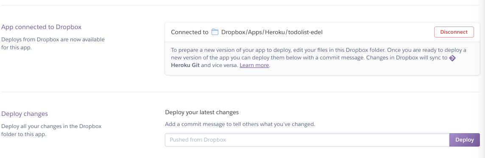
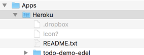
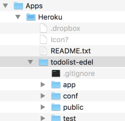
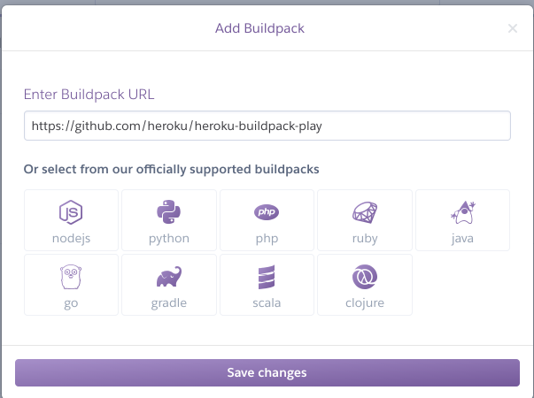
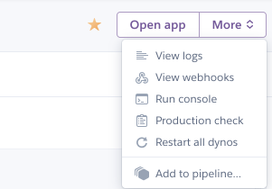
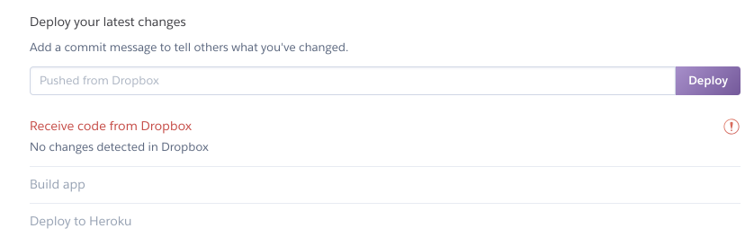
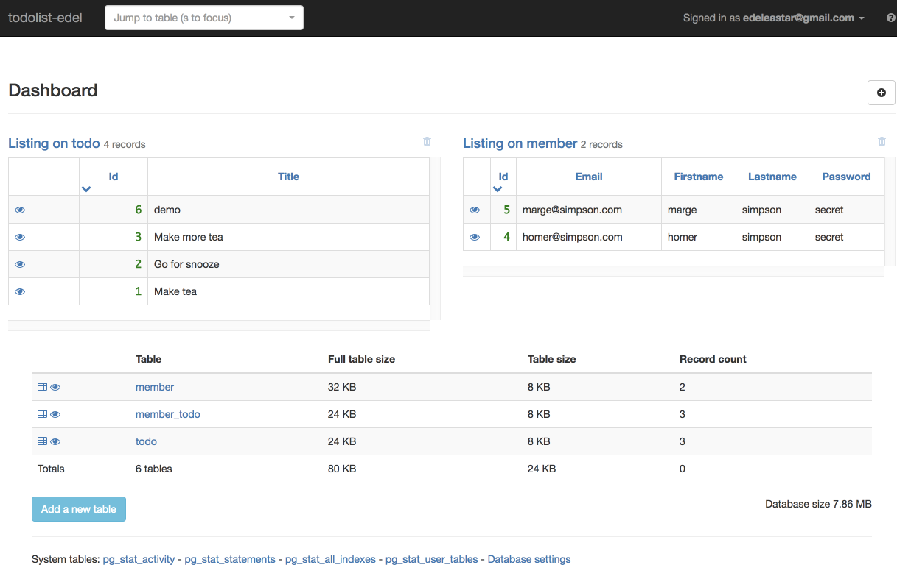

Objectives
Deploy a Play Application to the cloud
Setup.
We need 2 free services to get our Play Application live in the Cloud. In this step we create the necessary accounts.
- Heroku
- Dropbox
(1) Heroku
Visit this site:
And sign up for a new account.
Once confirmed, log in and go you your Dashboard:
This is a Platform as a Service provided (PaaS), you can read about PaaS here:
We will be using this service to get our Play Applications Live.
(2) Dropbox
If you do not already have one, create and account here:
You will then need to download the Dropbox Application, which will be a native application installed on your computer:
When this is installed, a folder called Dropbox will be created on your workstation - which will also be mirrored in the cloud. Make sure you can locate this folder and that it is in fact synced with the cloud.
Preparing the Play Application for Deployment
You may have your own version of the Todolist 2 application - which you can use for the rest of this lab. Alternatively, you can download the the version we left at the end of lab 10:
If you download the zip above, and expand - you will have a complete Play application like this:

We need to make the set the following parameters to prepare it for deployment:
- JDK Version
- Play Version
- Database Settings
You may want to import the project into Idea to make the changes below.
(1)JDK Version
Create a new file in the project root:
system.properties
java.runtime.version=8This sets the JDK version our app will need when deployed.
(2) Play Version
Locate this file:
conf/dependencies.yml
# Application dependencies
require:
- playChange it to the following:
# Application dependencies
require:
- play 1.5.0
- org.postgresql -> postgresql 42.2.2:
force: trueThis determines the precise version of Play + the database drivers it should use.
(3) Database Settings
We also need to set the database connection configuration to use when deployed. Open application.conf and locate the following line:
conf/application.conf
db.default=memComment out this line by placing a # in the first line:
# db.default=memInsert the following directly below:
db=${DATABASE_URL}
jpa.dialect=org.hibernate.dialect.PostgreSQLDialect
jpa.ddl=updateNB: This very last change will mean that YOUR APP WILL NO LONGER RUN LOCALLY! (apologies for the caps). So you will need to reverse the very last change if you want to run locally again.
Creating & Configure the Application on Heroku
Now we need to create and configure the application on Heroku:
- Create App
- Link to Dropbox
- Configure Buildpack
(1) Create Application
Back in the Heroku
Log in and you should see the main Dashboard:

Select 'New` and create a new application.

Give the app a name - this will have to be unique, so perhaps consider using your initials or name in the application name:

You might also locate the app in Europe. Press Create App and an application console will be displayed:
(2) Link to Dropbox
One of the options is Dropbox ... press it and you will be asked to authorise against your Dropbox credentials.
The Control panel will now have these additional options.

Also, check your Dropbox folder on your workstation. It should have a new folder - the same name as the application you created - inside an Dropbox/Apps/Heroku folder

When we are ready to deploy our application we place a copy in here. Do this now, copy the contents of the todolist folder into the newly created folder:
It might look like this:

We now have 2 versions of our app - then one we are working on, perhaps in IDEA - and another version we have copied out to a dropbox folder.
If you are using one of your own projects, be sure to exclude a .git subdirectory (if there is one) from the copy on dropbox.
(3) Configure Buildpack
We are now almost ready to deploy. We need to do one more step. Back in Heroku, switch to the Settings panel:

Press the Add Buildpack:

In the above, we have added this url:
https://github.com/heroku/heroku-buildpack-playSave changes and the buildpack should be installed:

The build pack is needed to inform Heroku how a play app is configured and managed.
Deploy the Application
Back in the Deploy panel - we can now press the Deploy button.
This will take a minute or so - and will log its progress...
If all goes well -- it should look like this:

This could take a minute or two...
Note the green tick indicating it is deployed. Press View and the app should be available:

Log in as homer@simpson.com, secret

You should be able to ad and remove todos. Log out, sign up a new user etc...
Logs
Back in the Heroku Console - select more on the top right:

Select View logs.

This is the equivalent of the console when you were running the app locally on your workstation. When testing the deployed application it is useful to always keep this view open. It enables you to monitor the application, identify potential errors and generally keep an eye on its operation.
You now have 2 versions of the source of your application
- The version you are developing using IDEA
- A copy of the application on a dropbox folder, shared with Heroku.
It is a good idea to keep these separate - and when you update the application you copy the source over to the dropbox version.
Running Locally
Please note: This change you made to conf/application.conf:
conf/application.conf
# db.default=mem
db=${DATABASE_URL}
jpa.dialect=org.hibernate.dialect.PostgreSQLDialect
jpa.ddl=updateWill prevent you from running the application locally. i.e. it will fail to launch when running via the play run command. Therefore, for the version of the application you are editing via IDEA, make suer to reverse the changes if you wish to run locally:
db.default=mem
# db=${DATABASE_URL}
# jpa.dialect=org.hibernate.dialect.PostgreSQLDialect
# jpa.ddl=updatePerhaps best to keep this file NOT in sync with the version on dropbox
Deploying Again
The procedure for updating the running app is to
- Copy the relevant source into the dropbox version
- Press the
Deploybutton again:

In the above example - it has not detected any changes, so will not deploy.
When deploying, the Build Logs become visible:
These logs are separate from the run time logs described above. You will need to monitor these logs occasionally in case any errors arise.
Database Dashboard
If you have been relying on this link:
...to view the browser when running locally - this will NOT work for the deployed version.
However, Heroku supports a free add-on which fulfils a similiar role:
Associating this service with your app is reasonably straightforward, and is all carried via the web interface.
It will involve installing the Addon:

This will ask for authorisation:

You will then be asked to enable it for your application - and you will eventually be able to browse its models like this:

You will even be able to edit the contents.
You will also be able to add tables to a Dashboard :

The dashboard is available at this url:

There are additional Widgets you can experiment with here to monitor database activity over time.
Exercises
Exercise 1: Deploy Playlist 5
Deploy the latest playlist application:
You will need to follow precisely steps 02, 03 and 04 from this lab.
Exercise 2: Workspace
See if you can arrange your workspace like this:

Here we are monitoring the deploy logs, the main application logs, the database console and the application itself (including the browser tools).
Try some variation of this now and get familiar with the nature of the information in each of the windows. Proceed through a deploy cycle while doing this (make a cosmetic change to the app in dropbox to allow a deploy to be triggered)